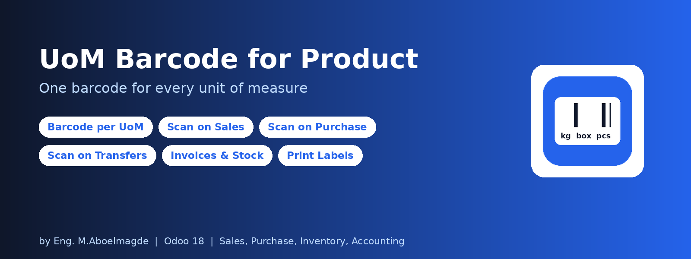
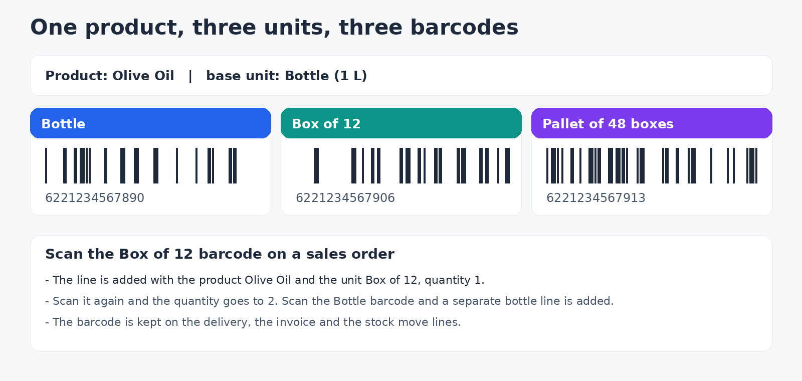
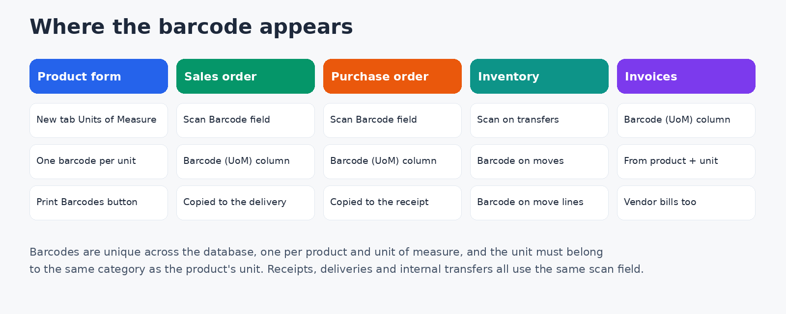
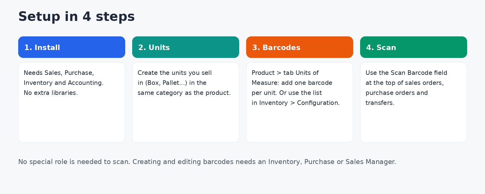

The same product often comes as a bottle, a box and a pallet, but standard Odoo gives it a single barcode. This module lets you give each unit of measure of a product its own barcode. Scan the box barcode and the order gets the product in the unit Box; scan the bottle barcode and it gets Bottle. The barcode then travels with the line through sales, purchasing, inventory and invoicing.



The module needs the Sales, Purchase, Inventory and Accounting apps. There are no extra Python libraries and no settings to fill in.
In Inventory > Configuration > Units of Measure, create the units you trade in (Box, Pallet, Carton and similar) in the same category as the product's own unit, with their ratio. A unit from another category is refused.
Open a product, go to the Units of Measure tab and add one line per unit with its barcode. You can also enter them from Inventory > Configuration > UoM Barcodes.
Click the Scan Barcode field at the top of a sales order, purchase order or transfer and scan with any keyboard-emulating barcode reader, or type the barcode and press Enter.
| Action | Who |
|---|---|
| See barcodes, scan them on documents, print the barcode sheet | Every internal user |
| Create, edit, archive and delete barcodes | Inventory Manager, Purchase Manager or Sales Manager |
product.uom.barcode. Extends product template, sale, purchase, stock picking and moves, and invoice lines.Why does Odoo say the barcode already exists? Each barcode can be used only once in the whole database, and each product can have only one barcode per unit.
Why is my unit refused? It must be in the same unit category as the product's unit of measure.
Why is the scan field not showing? On sales and purchase orders it is shown only while the order is a Draft or Sent quotation, and on transfers until they are done or cancelled.
Can I use a scanner? Yes, any barcode reader that types like a keyboard.
Bug-fix updates are included. Installation, configuration and customization support: Eng. M.Aboelmagde (YouTube: Odoo Lab, @odoolab).